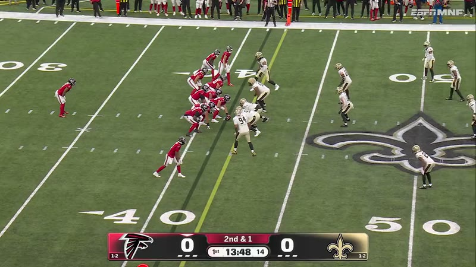
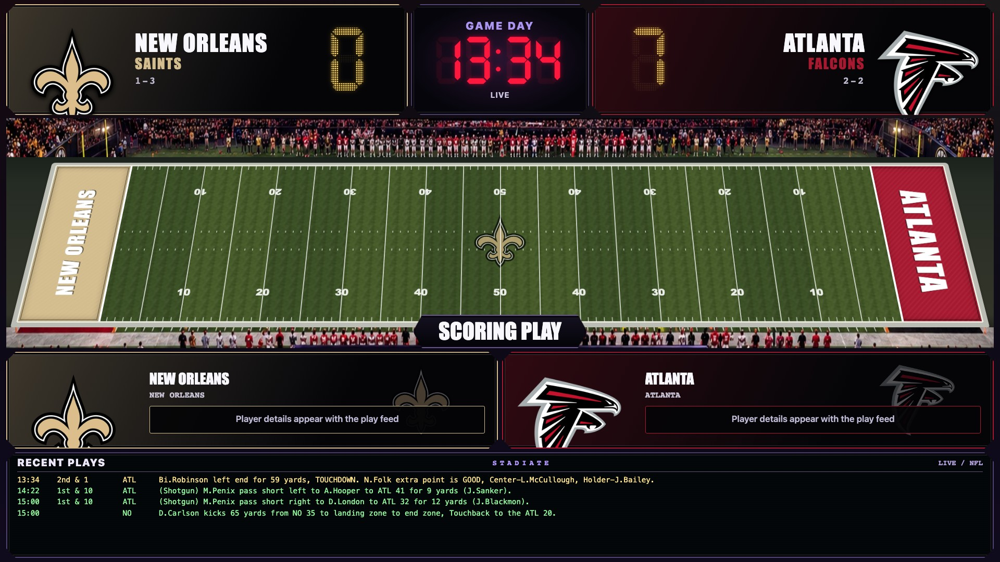

Stadiate on Apple TV
Live scores, Art View, and on-screen celebrations.
No Mac required. Needs internet and the app open.
Bring the stadium home
Live scores. Lights. Sound.
Your team scores. Your house celebrates.


Plays with sound.
Bijan scores. The room celebrates.
Room simulation, not a live stream. Lights and sound need Stadiate Hub on Mac and compatible devices.
Atlanta at New Orleans, October 5, 2026. Recorded footage used with permission, with Stadiate’s Falcons horn. The second screen is a real Stadiate capture. This preview does not control your devices. If the video cannot load, you’ll see the verified play-by-play instead. Play sources ↗
Your games. Your teams. Your entire house.
No connected home required.
Apple TV or a compatible browser with Hub on Mac.
Live scores beside your game. Keep your TV service.
Connect compatible devices with Hub. Optional.
Live scores
Choose a view. Open the screenshot full screen.

Follow every play. Scores, not a broadcast.
Real results, rendered in Stadiate. Apple TV layouts may differ.
 Saturday, tooGeorgia 38. Vanderbilt 14.View full-screen screenshot ↗
Saturday, tooGeorgia 38. Vanderbilt 14.View full-screen screenshot ↗
These browser screenshots render October 3–4, 2026 finals (Eastern time), not recordings from live games. Scores, stats, and play-by-play are from ESPN. Capture sources ↗
Art View
Live scores, woven into the scene.
Apple TV · Hub on Mac.

Four favorites, with 12 more themes on Hub-powered browser screens. Art View also works on Apple TV without a Mac.
Real October 3–4, 2026 finals rendered in the browser. Apple TV layouts may differ. Scene sources ↗ · Cathedral sources ↗
32 NFL teams and 36 college programs, including the SEC. Tap a crest to preview its room colors.
Artistic stained-glass interpretations, in development. More leagues are being glazed now.
Live scores, Art View, and on-screen celebrations.
No Mac required. Needs internet and the app open.
Bring browser screens, lights, and speakers together.
Requires a Mac, internet, and compatible devices. No Apple TV needed.
| What you can do | Apple TV | Hub on Mac |
|---|---|---|
| Follow teams & see live scores | ✓ On your Apple TV | ✓ On connected screens |
| Multiview, Arena & ticker | ✓ Built-in TV views | ✓ Personalize your screens |
| Art View | ✓ 14 themes, no Mac | ✓ Art on connected screens |
| Celebrations & spoiler-safe SYNC | ✓ On this Apple TV | ✓ Across the connected room |
| Phone control | ✓ Pair to this TV via QR | ✓ Full remote & settings |
| Smart lights & Sonos | Not standalone | ✓ Compatible devices required |
| Spoken calls & stadium ambience | Native horns only | ✓ Choose sounds & voice |
| Coordinate multiple screens | Each TV is independent | ✓ Shared events, individual layouts |
| Live video capture & PiP | No video capture | ✓ Capture source + ffmpeg |
| Personalized reactions & webhooks | Not standalone | ✓ Set rules & connect devices |
| Fantasy-player celebrations | Requires Stadiate Hub | ✓ Sleeper, manual, experimental CBS |
| Run while the TV app is closed | No · foreground only | ✓ Runs while the Mac is awake |
Hub features require an awake Mac and connected, compatible equipment. Browser screens need a compatible web browser. Video capture needs your own supported source, ffmpeg, and permissions; protected streaming content may not be capturable.
Follow player scoring events, not fantasy point totals. Use Sleeper, a manual roster, or CBS (EXPERIMENTAL). Choose starters or your full roster and check player mappings. CBS sign-in is best-effort and may be blocked.
No. Keep your usual TV service. Stadiate does not include broadcast rights or overlay other Apple TV apps. It brings scores and celebrations to a companion screen. Hub video capture requires your own supported source and permissions; DRM still applies.
Use the built-in delay and SYNC on your phone to match your stream. Team and fantasy-player celebrations wait for the same game delay. On standalone Apple TV, pair your phone by QR code on the same Wi-Fi.
Compatible browser screens and Apple TVs, plus supported Hue, Govee LAN, Home Assistant, and Sonos devices. Hub is optional Mac software that runs locally while your Mac is awake. Sports data needs internet; connected services may need their own accounts. No Stadiate cloud account is required. Privacy policy.
Private beta. Save this page for launch. Bring your game-day crew.